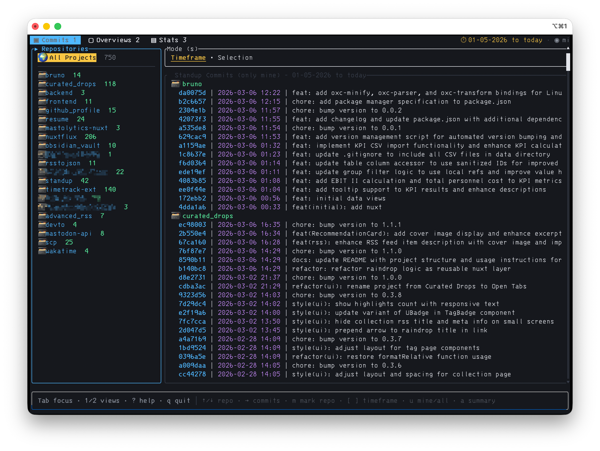
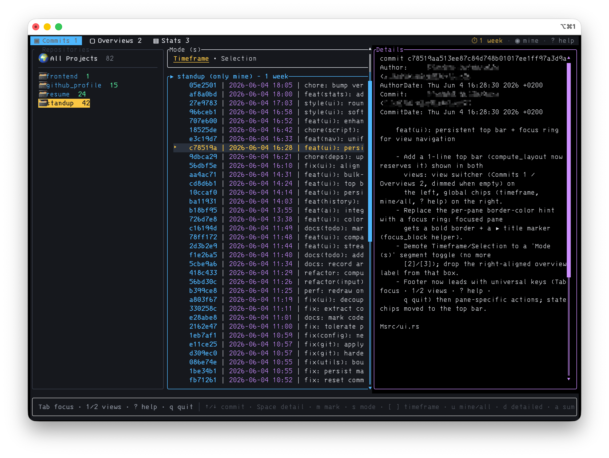
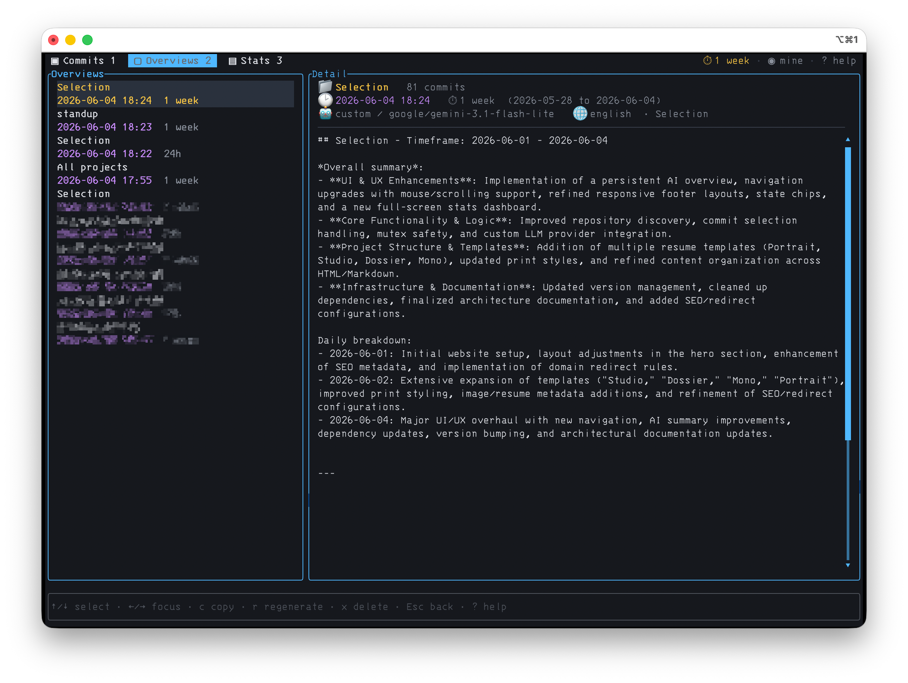
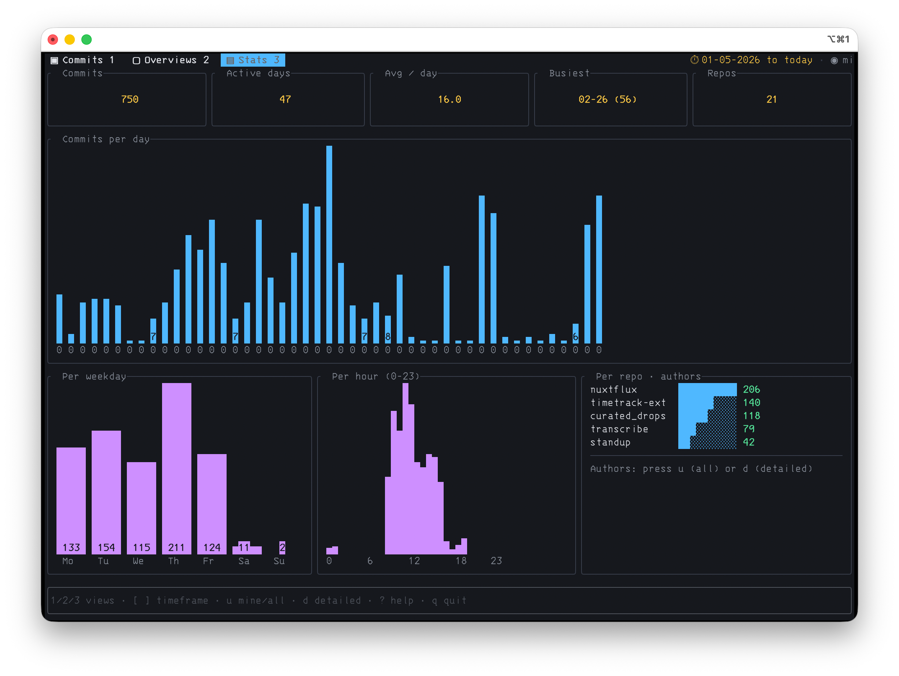

A terminal tool that scans your Git repositories, groups recent commits by day and topic, and turns them into a ready-to-read standup summary with AI — Google Gemini out of the box, or any OpenAI-compatible API.

A fast, keyboard-driven TUI with three views: commits, saved overviews, and a stats dashboard.



Everything happens in a fast, keyboard-driven TUI. No browser, no copy-pasting commit logs into a chat window.
Groups commits by day and topic into a readable standup. Powered by Gemini or any OpenAI-compatible endpoint.
Scans every Git repository under the current directory and lists their recent commits side by side.
Generated summaries are written to disk — browse, copy, regenerate, or delete past ones in a master/detail view that survives restarts.
Mark individual commits with m or bulk-mark a whole repo, then summarize only the selection.
Copy any summary to your clipboard with a single keypress and paste it straight into your standup.
Bring your own prompt template with placeholders for project, interval, language, and the commit data.
Ask for the summary in German, English, or anything else with a single --lang flag.
A two-view model with a focus ring, context-aware footer, and a built-in ? help overlay listing every key.
Toggle a multi-line git log-style view with full commit bodies and authors with d.
You need Rust to build, and an API key for your chosen provider.
This gives you two binaries: whathaveidone and the short alias whid.
cargo install whathaveidone
Gemini is the default. On first run, if no key is found, the app offers to save one to ~/.config/whid/whid.toml.
# Gemini (default) export GEMINI_API_KEY=your-key-here # …or any OpenAI-compatible provider — # key via env, base URL via config or the --base-url flag export CUSTOM_API_KEY=your-key-here whid --provider custom --base-url https://openrouter.ai/api/v1
Defaults to today's commits across all repos below the current directory.
whid # or: whathaveidone whid week --lang german
The app separates which view you're in from which pane has focus.
The sidebar of repositories plus the commit list. Switch the list between Timeframe and Selection mode with s. Press a to generate an AI overview.
A master/detail browser of past AI summaries. The left list holds every saved overview with its metadata; the right pane shows the full text. Copy, regenerate, or delete.
A full-screen dashboard with commits per day, by weekday and hour, your busiest day, and a per-repo and per-author breakdown.
Cycle with [ / ] at runtime, or pass a start interval as an argument:
whid # today / 24h (default) whid 48 whid yesterday # or 72 whid week whid month # custom date range (YYYY-MM-DD) whid --from 2026-01-01 --to 2026-01-31
Gemini by default; switch to any OpenAI-compatible API with --provider custom.
# Gemini model override whid --model gemini-2.5-flash-preview-05-20 # OpenRouter export CUSTOM_API_KEY=sk-or-... whid --provider custom \ --base-url https://openrouter.ai/api/v1 \ --model openai/gpt-4o-mini # OpenAI export CUSTOM_API_KEY=sk-... whid --provider custom \ --base-url https://api.openai.com/v1 \ --model gpt-4o-mini
Provide a template with --prompt file.txt. Placeholders are filled automatically:
{from} {to} {project} / {projectname} {interval} {lang} {commits}
Press ? at any time for an in-app overlay of every key.
Settings layer from three sources, each overriding the last: the embedded blueprint,
your user config at ~/.config/whid/whid.toml, and an optional whid.toml
in the current directory. CLI flags win over all of them.
| Setting | Description |
|---|---|
| provider | AI backend: "gemini" (default) or "custom". Override with --provider. |
| gemini_model | Gemini model for summaries. Override with --model. |
| custom_base_url | Endpoint URL for a custom provider, e.g. https://openrouter.ai/api/v1. |
| custom_model | Model name for the custom provider, e.g. openai/gpt-4o-mini. |
| custom_api_key | API key for the custom provider; falls back to CUSTOM_API_KEY. |
| custom_prompt_path | Path to a custom prompt template. Override with --prompt. |
| lang | Default summary language. Override with --lang. |
# ~/.config/whid/whid.toml provider = "gemini" gemini_model = "gemini-3.1-flash-lite" custom_base_url = "" custom_model = "" custom_api_key = "" lang = "english"